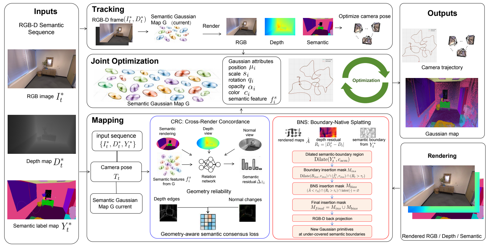

Concord-SLAM: Cross-Render Concordance for Boundary-Native Semantic Gaussian SLAM
论文概述 Overview
Concord-SLAM 面向 RGB-D 语义高斯 SLAM，针对物体边界附近的高斯跨界扩张、边界模糊和语义泄漏问题，联合约束渲染优化与地图增生。框架将同一高斯场生成的语义、深度与法向渲染视为关联证据，利用它们之间的结构差异改善地图的语义与几何一致性。 Concord-SLAM is an RGB-D semantic Gaussian SLAM framework that addresses cross-boundary Gaussian expansion, blurred boundaries, and semantic leakage through rendering optimization and map growth. It treats semantic, depth, and normal renderings from the same Gaussian field as coupled evidence and uses their structural discrepancies to improve semantic-geometric coherence.
跨渲染一致性模块（CRC）结合渲染语义特征、深度和深度导出的法向，预测语义残差，并利用局部几何可靠性构造软监督目标。边界原生高斯增生模块（BNS）在常规透明度与深度残差增生规则之外，引入语义边界插入掩码，在覆盖不足的边界邻域补充高斯基元，使边界两侧在建图过程中获得更独立的表示。 Cross-Render Concordance (CRC) combines rendered semantic features, depth, and depth-derived normals to predict a semantic residual and builds soft supervision targets using local geometric reliability. Boundary-Native Splatting (BNS) augments opacity- and depth-residual-based growth with a semantic-boundary insertion mask, adding Gaussians in under-covered boundary neighborhoods to better separate the two sides during mapping.
在 Replica 与 ScanNet 数据集上的实验表明，Concord-SLAM 能够提升语义建图与场景重建质量，同时保持有竞争力的相机跟踪性能。 Experiments on Replica and ScanNet demonstrate improved semantic mapping and scene reconstruction while maintaining competitive camera tracking performance.
方法流程 Method Pipeline

关键贡献 Key Contributions
- 提出边界原生语义高斯 SLAM 框架，将同一地图的多种渲染结果之间的不一致作为地图优化的内在信号。 Introduces a boundary-native semantic Gaussian SLAM framework that uses disagreement among renderings of a shared map as an intrinsic refinement signal.
- 设计跨渲染一致性模块，通过几何引导的语义残差校正与可靠性感知监督改善语义边界对齐。 Designs CRC to improve semantic boundary alignment through geometry-guided residual correction and reliability-aware supervision.
- 设计边界原生高斯增生策略，在覆盖不足的语义边界邻域主动插入高斯，改善边界的表示。 Designs BNS to improve boundary representation by actively inserting Gaussians in under-covered semantic boundary neighborhoods.